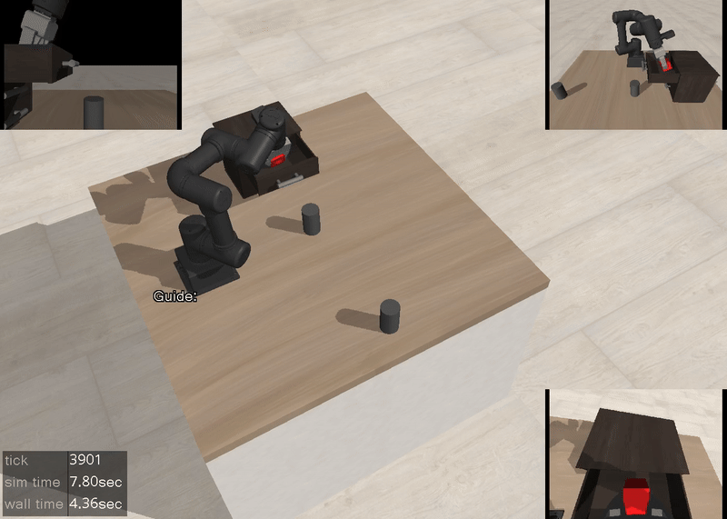
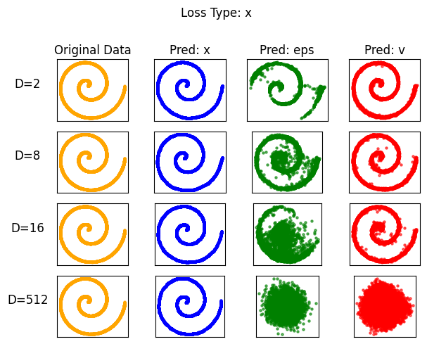
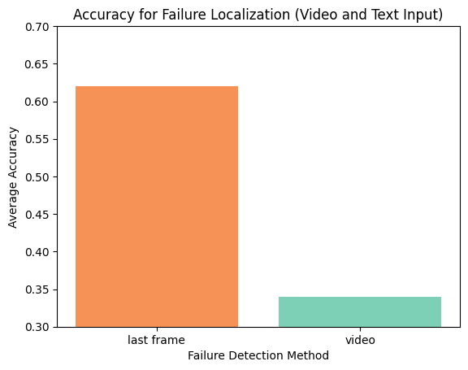
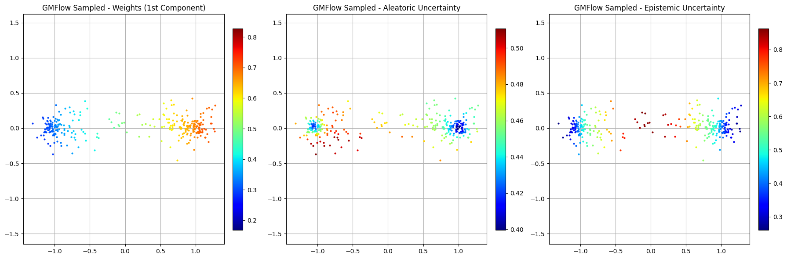
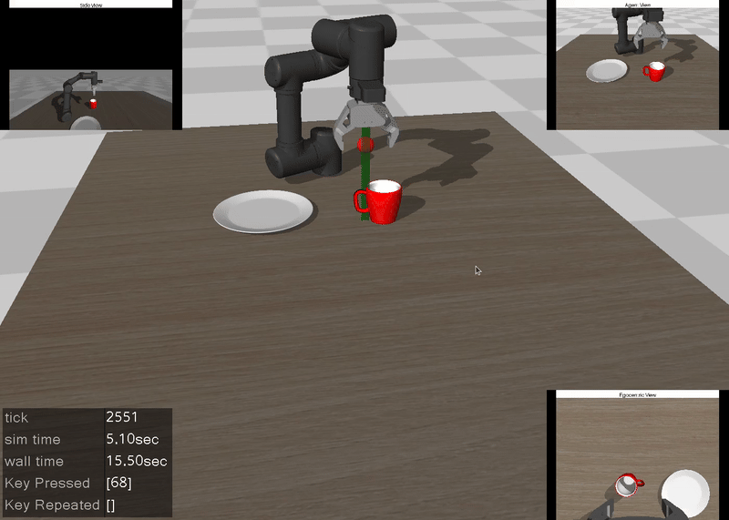
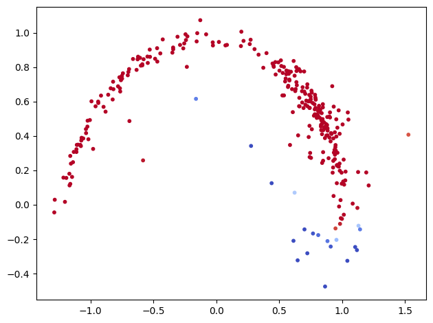
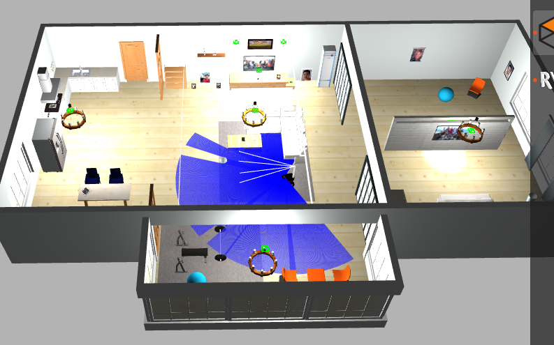
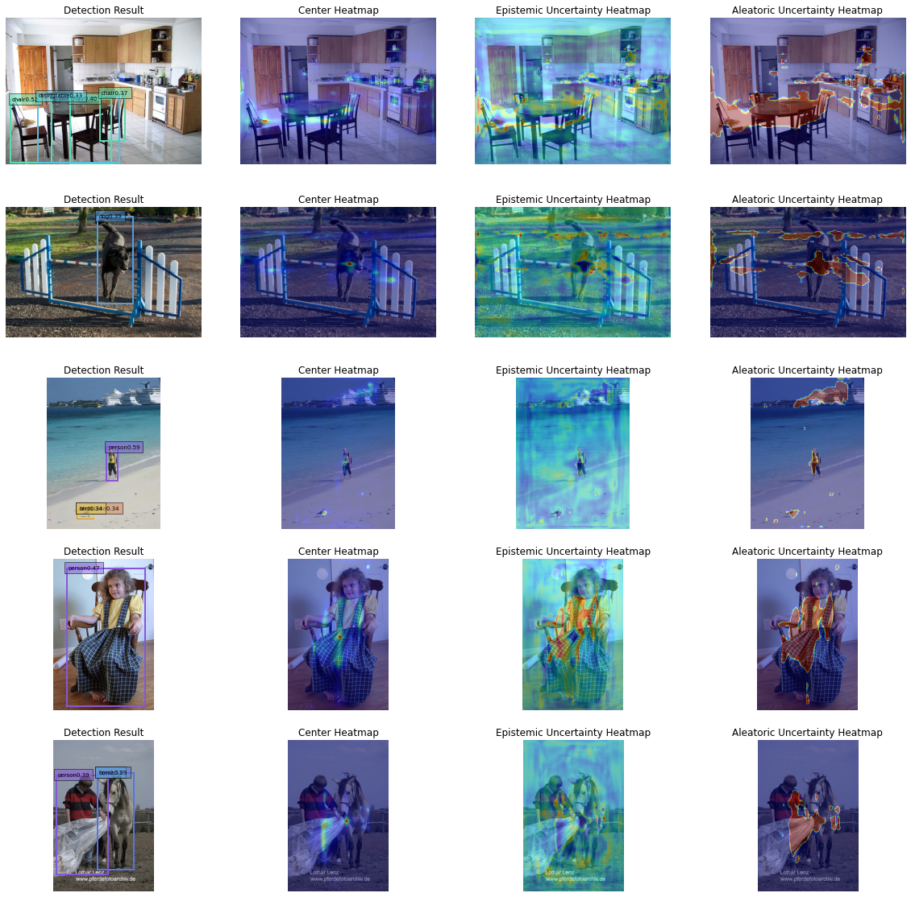
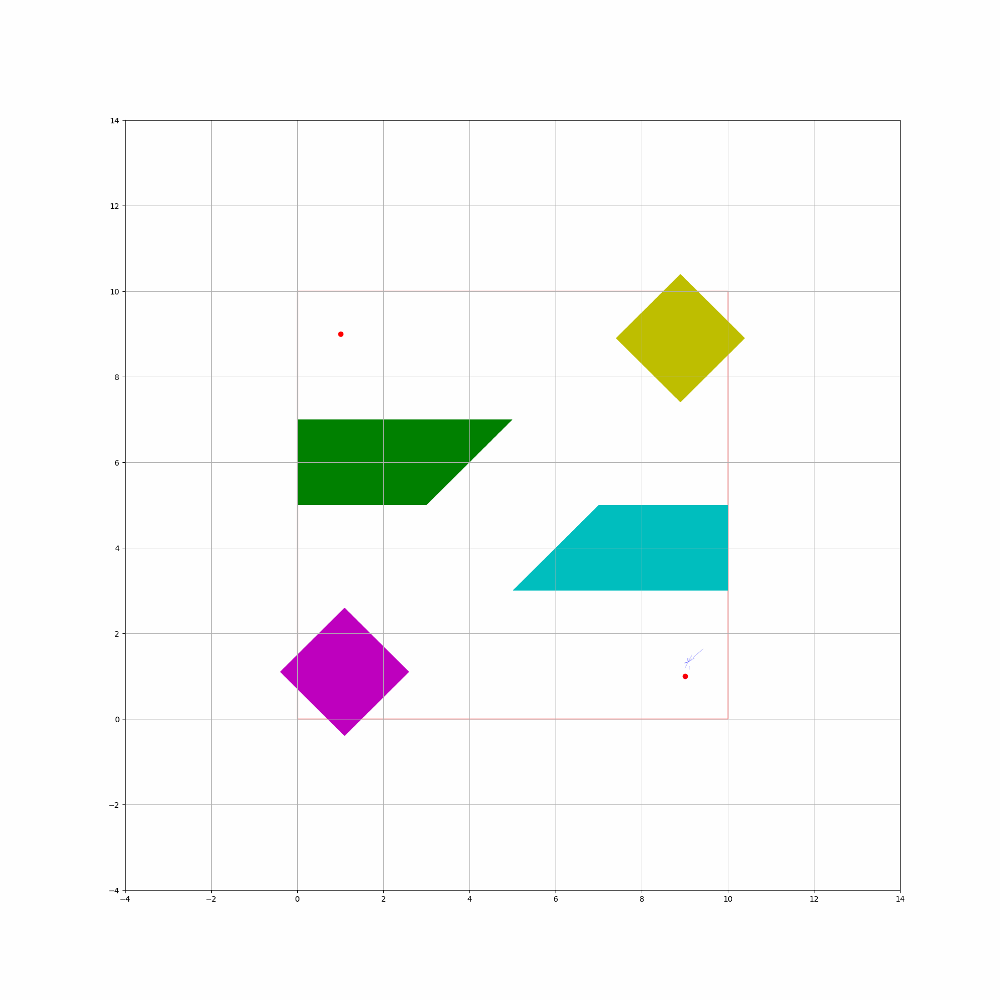
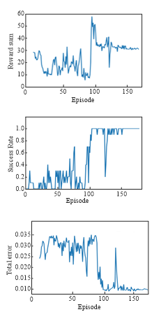

Tools, tutorials, and reference implementations for robotics and machine learning. Code associated with my publications is not included here.

jeongeun980906/Lerobot-MujoCo-VLA-Tutorial
An end-to-end workflow for training and evaluating vision-language-action policies, from teleoperation and dataset preparation to custom policy integration. Includes π₀.₅ and GR00T N1.5.
Vision-Language-ActionMuJoCoTutorial
View on GitHub →
jeongeun980906/jit-unofficial-light
A lightweight, unofficial JiT implementation with a Colab toy demo exploring prediction spaces and loss functions for denoising generative models.
Generative ModelsPyTorchColab
View on GitHub →
jeongeun980906/CoTaP-Failure-Detection
Detect success or failure in robot manipulation videos and localize when a failure occurs, using frame, text, video, or hybrid inputs.
Robot LearningFailure Detection
View on GitHub →
jeongeun980906/Uncertainty-Aware-Gaussian-Mixture-Flow-Matching
A notebook tutorial for learning 2D trajectories with Gaussian mixture flow matching and visualizing aleatoric and epistemic uncertainty.
Flow MatchingUncertaintyTutorial
View on GitHub →
jeongeun980906/lerobot-mujoco-tutorial
Hands-on examples for collecting demonstrations, training policies, and deploying them in MuJoCo with LeRobot. Includes ACT, π₀, and SmolVLA.
MuJoCoLeRobotImitation Learning
View on GitHub →
jeongeun980906/Flow-matching-model-PPO-Finetune
A tutorial on reinforcement learning fine-tuning of flow matching models, with toy examples for unlearning and improving sample fidelity.
Flow MatchingReinforcement LearningTutorial
View on GitHub →
jeongeun980906/Uncertainty-Estimation-Baselines
Reference notebooks for uncertainty estimation, out-of-distribution detection, and calibration, including Gaussian processes, dropout, energy scores, and mixture logit networks.
UncertaintyOOD DetectionBaselines
View on GitHub →
jeongeun980906/pioneer_playground
A ROS Noetic and Gazebo playground for a Pioneer mobile robot in a simulated house, with camera, depth, and lidar interfaces.
ROSGazeboNavigation
View on GitHub →
jeongeun980906/Robust_Learning_Baseline
A collection of label-noise learning implementations, including noise adaptation, forward correction, Co-teaching, JoCoR, and DivideMix.
Robust LearningLabel NoiseBaselines
View on GitHub →
jeongeun980906/Centernet-MDN
An adaptation of CenterNet with a mixture density network, with qualitative visualizations of epistemic and aleatoric uncertainty.
Object DetectionUncertainty
View on GitHub →
jeongeun980906/ActiveLearning_Baseline
Active learning baselines for MNIST and CIFAR-10, including uncertainty-based querying, greedy core-set selection, and BALD.
Active LearningBaselines
View on GitHub →
jeongeun980906/dynamic_rrt
RRT and RRT* path planning examples with moving obstacles, including visualizations of search-tree construction.
Motion PlanningRRTNavigation
View on GitHub →
jeongeun980906/peg-in-hole
Reinforcement learning experiments for peg insertion, exploring DQN, DDPG, PPO, recurrent policies, and hindsight experience replay.
ManipulationReinforcement Learning
View on GitHub →